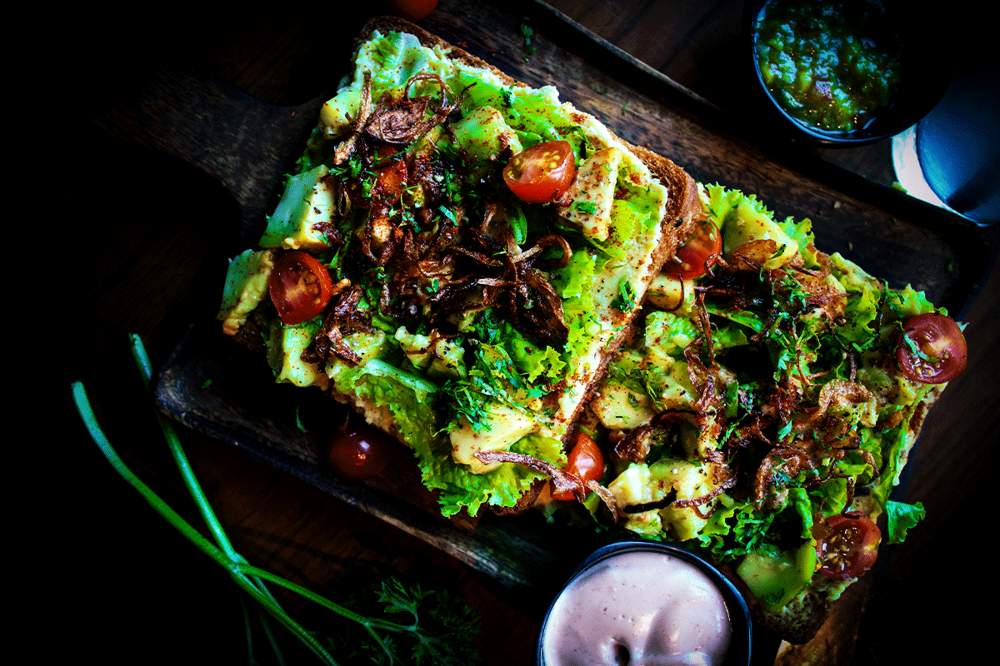

Not just for breakfast, our avocado toast is a light but scruptous pile of healthy veggies and avocados on a toasted slice of house multigrain bread!
A walnut "meat" base with smoked bok choy wrapped in a multigrain tortilla brought to perfection with the house green chili!
A house favorite! Taro is perfect for the rich and savory flavors expected in a top notch burger.
Packed with fiber and flavor, this non-traditional taco salad is composed of our house grown tomatoes, avocados, corn, and taco spice blend served atop white corn tortillas.
A longstanding signature dish, we smoke our Portabello before adding a spicy pepper rub and finishing with a Rosemary Demiglaze.
Walnuts and Lentils form the base for this hearty and healthy burger. Served with purple potatoes.
A staple of the Japanese diet, seaweed is integrated into our housemade tofu to create the salty ocean flavor beloved by seafood afficianados.
A boring name with a full-bodied flavor, our home grown Cauliflower perfectly absorbs the flavors of the onions, capers, mushrooms, and worchestershire that compose a traditional Tartare.